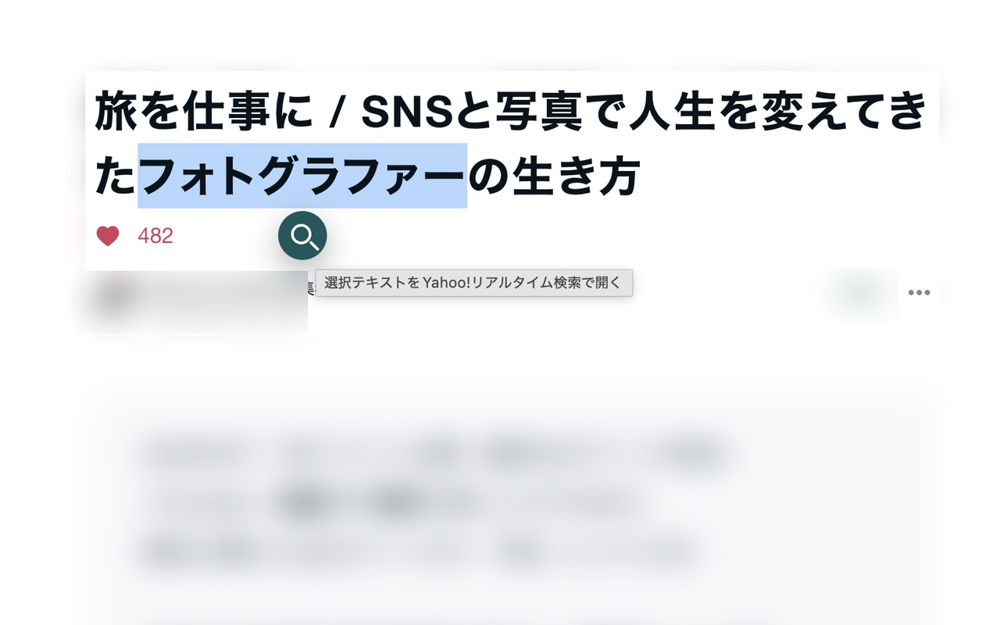
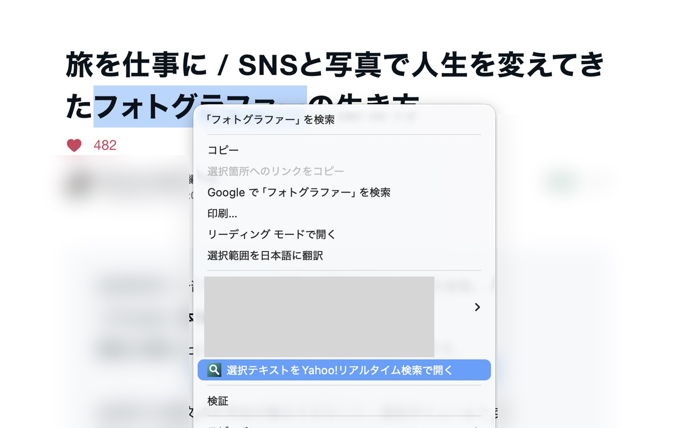

リアルタイム検索
選択テキストをYahoo!リアルタイム検索へ。
ページで気になった言葉を選び、検索アイコンや右クリックメニューから検索結果を新しいタブで開く、小さなChrome拡張です。

選択した言葉を、すぐ検索へ。
- 選択したテキストの近くに表示される検索アイコンから開けます。
- 右クリックメニューからもYahoo!リアルタイム検索へ進めます。
- 広告・解析・検索履歴の保存は行いません。検索時には選択テキストが検索URLに含まれます。

非公式のショートカットです。
Yahoo! JAPANの公式製品ではありません。情報の取り扱いはプライバシーポリシーをご確認ください。お問い合わせはChrome Web Storeのデベロッパー連絡先をご利用ください。